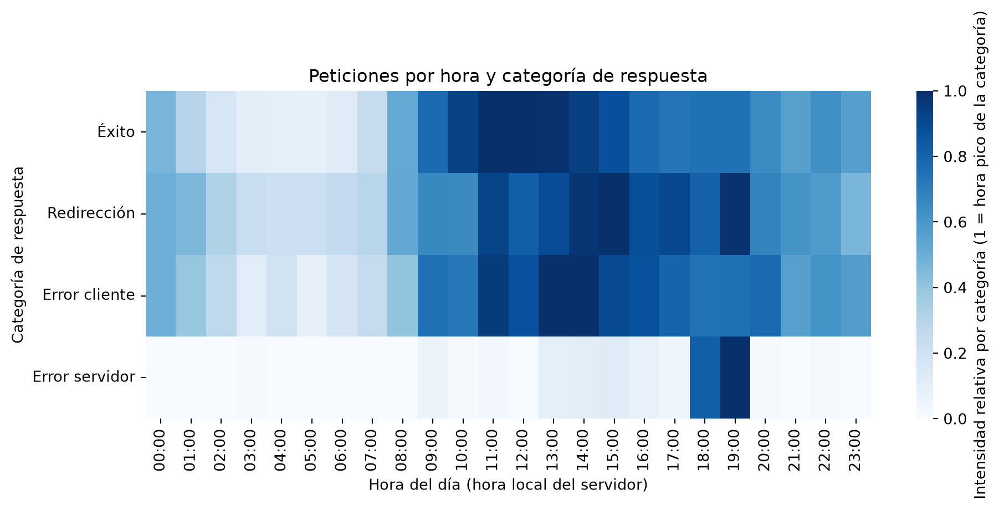
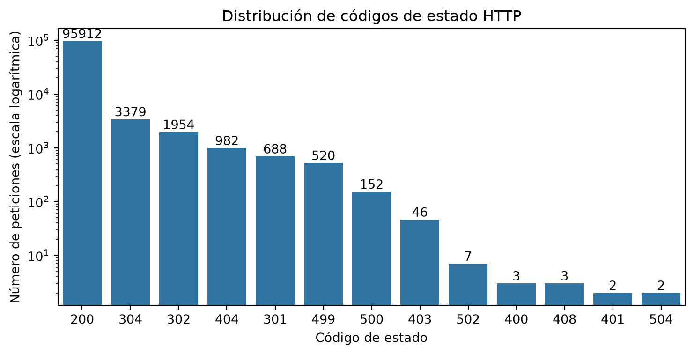
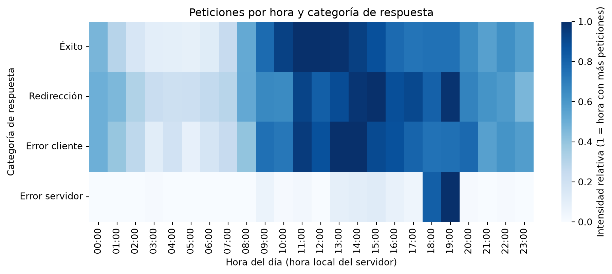

Análisis de logs de acceso de un servidor web con Pandas
Proyecto FBX · Trabajo 1: Pandas · 2º de ASIR
Autor/a
Fred Ruiz Guerrero, Bryan Fabricio Paucar Alvarado, Xiomara Isabella Valenzuela Maza
Fecha de publicación
8 de noviembre de 2026
1. Introducción y objetivos
1.1 Contexto
Un servidor web anota en un archivo de texto (el log de acceso) cada petición que recibe: quién la hace, cuándo, qué pide y si el servidor pudo atenderla. Para un administrador de sistemas, ese archivo es una fuente directa de información sobre el rendimiento, los errores y la seguridad del servicio.
En este trabajo analizamos con Pandas el log de acceso de una tienda online, siguiendo el método de un SysAdmin: limpiar los datos, explorarlos, hacer preguntas concretas y proponer acciones correctoras a partir de los resultados.
1.2 Preguntas que queremos responder
¿Cuándo hay más carga en el servidor y cómo se reparte a lo largo del día?
¿Qué proporción de peticiones termina en error y de qué tipo (cliente o servidor)?
¿Qué direcciones IP generan más tráfico o más errores y podrían ser abusivas?
¿Qué parte del tráfico procede de robots (bots) y cuál de usuarios reales?
¿Qué parte del tráfico procede de máquinas identificables por nombre (hostname)?
1.3 Herramientas utilizadas
Herramienta
Uso en el proyecto
Python y Pandas
Carga, limpieza, agrupación y análisis de los datos
Matplotlib y Seaborn
Gráficos estáticos
Plotly
Gráficos interactivos y animados
Quarto
Redacción del informe y generación de la web
Git y GitHub
Control de versiones, repositorio y publicación en GitHub Pages
2. Dataset
2.1 Origen, licencia y cita
El dataset Web Server Access Logs está publicado en Kaggle por eliasdabbas y procede de un conjunto de datos de Harvard Dataverse. Contiene 3,5 GB de logs en formato Nginx de una tienda online iraní. Su licencia es CC0 (dominio público).
Es un dataset adecuado para la administración de sistemas porque reproduce el trabajo real con logs de un servidor web: tráfico de usuarios, tráfico de robots, errores HTTP y posibles comportamientos abusivos.
2.2 Archivos y columnas
El dataset incluye dos archivos.
access.log (3,5 GB): una línea por petición. De cada línea extraemos estos campos:
Columna
Significado
ip
Dirección IP del cliente que hace la petición
fecha
Fecha y hora de la petición (con zona horaria)
metodo
Método HTTP (GET, POST…)
url
Recurso solicitado
protocolo
Versión del protocolo HTTP
status
Código de respuesta del servidor (200, 404, 500…)
bytes
Tamaño de la respuesta en bytes
referer
Página desde la que llegó el cliente
user_agent
Navegador o programa que hizo la petición
client_hostname.csv (13 MB): información adicional sobre los clientes.
Columna
Significado
client
Dirección IP del cliente (clave para unir con el log)
hostname
Nombre de la máquina asociado a esa IP
alias_list
Alias del nombre (en la mayoría de casos, Unknown host)
address_list
Lista de direcciones (casi siempre vacía)
2.3 Muestreo y justificación del tamaño
El log completo pesa 3,5 GB: no cabe en un repositorio de GitHub (límite de 100 MB por archivo) y es demasiado grande para procesarlo cómodamente en un ordenador personal. Por eso trabajamos con una muestra sistemática seleccionando una de cada \(N\) líneas (en este caso, \(N = 100\)). Esto significa que se almacena una línea y se omiten las 99 siguientes de forma consecutiva (guardando los registros cuyo número de orden es múltiplo de 100). En lugar de tomar únicamente las primeras líneas del archivo —lo que sesgaría el análisis temporal—, este método distribuye de forma uniforme los datos a lo largo de todo el periodo registrado en el log. El script que automatiza este proceso se encuentra en scripts/crear_muestra.py.
Código
N =100total =0guardadas =0withopen("data/access.log", encoding="utf-8", errors="ignore") as entrada, \open("data/muestra.log", "w", encoding="utf-8") as salida:for numero, linea inenumerate(entrada): total +=1if numero % N ==0: salida.write(linea) guardadas +=1print("Lineas leidas:", total)print("Lineas guardadas en la muestra:", guardadas)
Lineas leidas: 10365152
Lineas guardadas en la muestra: 103652
Lo ejecutmaos desde la terminal de VS Code (con (.venv) activo), en la carpeta del proyecto:
Para traducir los códigos de respuesta a su significado y agruparlos por categoría, usamos una tabla auxiliar propia (data/codigos_http.csv) con tres columnas: status, descripcion y categoria.
Cada línea del log es texto plano. Mediante una expresión regular separamos sus campos y los guardamos en las columnas de un DataFrame. Después convertimos los tipos de datos: la fecha a tipo fecha (en la hora local del servidor, Irán, UTC+3:30), el código de estado a entero y los bytes a número.
Qué se ve: Se han leído 103.652 líneas de la muestra y solo 2 no se han podido parsear (un 0,002 %). Las primeras filas corresponden al 22 de enero de 2019 a las 03:56 (hora de Teherán) y son todas peticiones GET con código 200 a listados con filtros, fichas de producto e imágenes. Por el user agent, mezclan robots (AhrefsBot y Googlebot) con usuarios reales desde un ordenador con Windows, un iPhone y una aplicación de Android.
Qué significa: El parseo funciona; cada línea se descompone en sus campos y los tipos son correctos (fecha con la hora local de Teherán, código de estado y bytes numéricos). Descartar solo 2 líneas no afecta al análisis. Que desde las primeras peticiones aparezcan robots junto a usuarios justifica estudiarlos por separado más adelante (sección 6.1).
Qué haría un SysAdmin: Revisar las dos líneas descartadas en el log original, porque una petición con formato inesperado puede ser una petición malformada o un intento de ataque, y tener presente desde el inicio que el tráfico de robots y el de usuarios deben analizarse por separado.
4. Exploración inicial y limpieza (EDA)
Antes de sacar conclusiones hay que saber si los datos son fiables. El rango de fechas y el número de días deciden cómo se hace el gráfico animado (sección 5.5). Los tres resúmenes responden a: ¿Hay muchos errores?, ¿Cuándo hay más carga?, ¿Alguna IP hace demasiadas peticiones? Un log puede tener filas idénticas de forma legítima (dos peticiones en el mismo segundo), así que no se borran duplicados sin pensarlo: se comenta el resultado.
4.1 Estructura y tipos de datos
Código
# Muestra la información general del DataFrameimport pandas as pd# Muestra la información general del DataFramedf.info()# Preparamos el resumen estadísticoresumen = df[["bytes", "status", "hora"]].describe()# Creamos el objeto de estilo para aplicar formatos selectivos por filas y columnasstyled_resumen = resumen.style.format({"bytes": "{:.2f}", # Bytes con 2 decimales en todas partes"status": "{:.0f}"# Status como entero limpio en todas partes})# 1. Para la columna 'hora': count debe ser un número entero sin decimalesstyled_resumen = styled_resumen.format("{:.0f}", subset=pd.IndexSlice[['count'], ['hora']])# 2. Para 'std' de la hora: se mantiene como número decimal de dispersiónstyled_resumen = styled_resumen.format("{:.2f}", subset=pd.IndexSlice[['std'], ['hora']])# 3. Para las filas de tendencia central/posición de la hora (media, min, percentiles, max): # aplicamos el formato de reloj "HH:00" de forma limpiarows_hora_reloj = ['mean', 'min', '25%', '50%', '75%', 'max']styled_resumen = styled_resumen.format(lambda x: f"{int(round(x)):02d}:00", subset=pd.IndexSlice[rows_hora_reloj, ['hora']])# Mostramos la tabla perfectamente formateadadisplay(styled_resumen)
Qué se ve: La tabla resume las tres métricas principales para los 103.650 registros (count), confirmando una completitud del 100% sin valores nulos en ninguna de estas columnas. En los bytes, el mínimo es 0.00, la mediana (50%) es 4.120,00, el percentil del 75% es 11.498,00, la media es 12.479,92 y el máximo alcanza 769.265,00 (~769 KB), con una desviación estándar de 28.794,46. En el status, la media se sitúa en 210, el percentil del 75% es 200 y el valor máximo llega a 504. En la hora, tanto la media como la mediana (50%) se ubican a las 14:00, con una dispersión (desviación estándar) de 5.74 horas, abarcando desde las 00:00 hasta las 23:00.
Qué significa: El conteo exacto de 103.650 registros valida que el dataset de trabajo está totalmente limpio y depurado. La distribución de los bytes es fuertemente asimétrica: la desviación estándar duplica a la media y el valor máximo se dispara, lo que indica que el 75% de las peticiones son ligeras (menores a 11.5 KB) y un pequeño grupo de respuestas muy pesadas arrastra la media hacia arriba. Los 0 bytes corresponden a respuestas vacías (como métodos HEAD u OPTIONS). En cuanto al status, al menos el 75% de las peticiones devuelven un código HTTP 200 (éxito), apareciendo el 504 como valor máximo de error en pasarelas o servidores de backend. Finalmente, la coincidencia de la media y la mediana de la hora a las 14:00 denota una distribución central del tráfico en torno al mediodía y primeras horas de la tarde.
Qué haría un SysAdmin: Documentar formalmente que el conjunto de datos analizado carece de valores faltantes en estas variables críticas. Utilizar la mediana (4.120 bytes) en lugar de la media para hablar del tamaño típico de una respuesta (evitando la distorsión de los valores extremos) y priorizar la optimización (compresión o caché) sobre los recursos que generan los picos cercanos a los 769 KB.
ip 0
fecha 0
metodo 0
url 0
protocolo 0
status 0
bytes 0
referer 0
user_agent 0
hora 0
dia 0
dtype: int64
Filas duplicadas: 0
Primera petición: 2019-01-22 03:56:14+03:30
Última petición: 2019-01-26 20:29:11+03:30
Días distintos: 5
NotaInterpretación técnica
Qué se ve: Ninguna columna tiene nulos, no hay filas duplicadas y la muestra cubre 5 días, desde el 22 de enero de 2019 a las 03:56 hasta el 26 de enero a las 20:29.
Qué significa: Los datos están completos y no necesitan limpieza adicional. Como la muestra no empieza ni termina a medianoche, las horas de 00:00 a 02:00 y de 21:00 a 23:00 solo tienen 4 días de datos frente a los 5 del resto, algo que hay que tener en cuenta al comparar horas.
Qué haría un SysAdmin: Conservar todos los registros y dejar constancia de esta limitación del periodo antes de sacar conclusiones sobre el reparto horario.
4.3 Resúmenes estadísticos
Resumen 1: distribución de códigos de respuesta.
Código
import pandas as pd# 1. Obtenemos el conteo original de los estadosresumen_status = df["status"].value_counts().to_frame("peticiones")resumen_status["porcentaje"] = (resumen_status["peticiones"] /len(df) *100).round(2)# 2. Función para clasificar cada código HTTP en su categoría correspondientedef categorizar_status(codigo):if200<= codigo <300:return"Éxito"elif300<= codigo <400:return"Redirección"elif400<= codigo <500:return"Error de cliente"elif500<= codigo <600:return"Error de servidor"else:return"Otro"# 3. Creamos la nueva columna 'categoria' y la reordenamos para que esté al lado del statusresumen_status["categoria"] = resumen_status.index.map(categorizar_status)# Reordenamos las columnas: primero peticiones, luego categoría, luego porcentaje (o como prefieras)resumen_status = resumen_status[["categoria", "peticiones", "porcentaje"]]# 4. Mostramos la tabla con el formato de porcentaje limpiodisplay(resumen_status.style.format({"porcentaje": "{:.2f}%"}))
categoria
peticiones
porcentaje
status
200
Éxito
95912
92.53%
304
Redirección
3379
3.26%
302
Redirección
1954
1.89%
404
Error de cliente
982
0.95%
301
Redirección
688
0.66%
499
Error de cliente
520
0.50%
500
Error de servidor
152
0.15%
403
Error de cliente
46
0.04%
502
Error de servidor
7
0.01%
400
Error de cliente
3
0.00%
408
Error de cliente
3
0.00%
401
Error de cliente
2
0.00%
504
Error de servidor
2
0.00%
NotaInterpretación técnica
Qué se ve: El 92,53 % de las respuestas son 200. Las redirecciones suman el 5,81 % (304: 3,26 %, 302: 1,89 %, 301: 0,66 %). Los errores de cliente son el 1,50 % (404: 0,95 % con 982 peticiones; 499: 0,50 % con 520) y los errores de servidor el 0,16 % (161 peticiones, casi todas 500).
Qué significa: El servicio está sano, porque más del 92 % de las peticiones se atienden correctamente. Los 404 son pocos, pero indican enlaces rotos o rastreadores probando rutas que no existen. Los 499, propios de Nginx, indican que el cliente cerró la conexión antes de recibir la respuesta, normalmente por lentitud o porque se canceló la carga.
Qué haría un SysAdmin: Corregir o redirigir con un 301 las URLs que más 404 generan, vigilar los errores 5xx en el log de errores del servidor y comprobar si los 499 coinciden con las horas de más carga.
Resumen 2: peticiones por hora del día (hora local del servidor).
Código
por_hora = df.groupby("hora").size().to_frame("peticiones")# Creamos la columna con el formato de hora profesional (HH:00)por_hora["hora_reloj"] = [f"{h:02d}:00"for h in por_hora.index]# Reordenamos para que la hora en formato reloj aparezca primeropor_hora = por_hora[["hora_reloj", "peticiones"]]# Imprimimos los avisos en consola (utilizando el índice original)print("Hora pico:", por_hora["peticiones"].idxmax(), "horas con", por_hora["peticiones"].max(), "peticiones")print("Hora mínima:", por_hora["peticiones"].idxmin(), "horas con", por_hora["peticiones"].min(), "peticiones")# Mostramos la tabla ocultando el índice numérico por completodisplay(por_hora.style.hide(axis="index"))
Hora pico: 11 horas con 7315 peticiones
Hora mínima: 5 horas con 707 peticiones
hora_reloj
peticiones
00:00
3448
01:00
2275
02:00
1264
03:00
790
04:00
766
05:00
707
06:00
929
07:00
1845
08:00
3817
09:00
5636
10:00
6730
11:00
7315
12:00
7254
13:00
7246
14:00
6924
15:00
6497
16:00
5758
17:00
5489
18:00
5587
19:00
5663
20:00
4787
21:00
4154
22:00
4624
23:00
4145
NotaInterpretación técnica
Qué se ve: El pico está a las 11:00 h (7.315 peticiones) y el mínimo a las 05:00 h (707). El tráfico sube desde las 06:00 h, se mantiene por encima de 6.400 peticiones por hora entre las 10:00 y las 15:00 h y baja progresivamente por la tarde y la noche.
Qué significa: Es el patrón diurno típico de una tienda online: actividad concentrada en horario laboral y mínimo de madrugada.
Qué haría un SysAdmin: Programar el mantenimiento, las actualizaciones y las copias de seguridad entre las 03:00 y las 05:00 h, cuando hay menos de 800 peticiones por hora, y dimensionar la capacidad del servidor para el tramo de 10:00 a 15:00 h.
Qué se ve: Tres IPs del rango 66.249.66.x acumulan 7.560 peticiones (el 7,3 % del total): 66.249.66.194 con 3.538, 66.249.66.91 con 3.094 y 66.249.66.92 con 928. El resto del top 10 oscila entre 285 y 893 peticiones.
Qué significa: La 66.249.66.92 se identifica como googlebot.com en la sección 5.1, y las otras dos pertenecen al mismo rango, por lo que muy probablemente también son rastreadores de Google. Es mucho tráfico, pero de un robot legítimo.
Qué haría un SysAdmin: No bloquear a Googlebot, porque perjudicaría el posicionamiento de la tienda, pero vigilar su ritmo de peticiones, y averiguar a quién pertenecen las demás IPs del top 10 (por ejemplo, con una consulta whois).
5. Combinación de datos (merge)
El primer merge enriquece cada petición con el nombre de la máquina cliente, y el segundo traduce números a significado. how=“left” conserva todas las filas del log aunque la IP no esté en el CSV; drop_duplicates y validate=“m:1” evitan que una IP repetida duplique peticiones sin avisar. Según la ficha de Kaggle, en el 98 % de las filas del CSV el nombre no se pudo resolver: ese porcentaje es en sí un resultado que hay que interpretar (tráfico anónimo frente a tráfico identificado).
5.1 Unión del log con client_hostname.csv
Antes de combinar, exploramos el segundo archivo y eliminamos IPs repetidas para que cada IP aparezca una sola vez. Después unimos por la IP, conservando todas las peticiones del log (how="left"), y comprobamos que la relación es de muchos a uno (validate="m:1").
Qué se ve: Solo el 5,19 % de las peticiones tiene un hostname identificado. Los más frecuentes son crawl-66-249-66-92.googlebot.com (928 peticiones), host.coloup.com (427) y zmap.sorengard.com (281); también aparecen otros nodos de Googlebot, msnbot (Bing) y servidores de Amazon.
Qué significa: Cerca del 95 % del tráfico es anónimo, porque su IP no tiene nombre inverso. Entre los identificados predominan los robots de buscadores, pero también hay máquinas de proveedores de nube y un nombre, zmap.sorengard.com, que sugiere un escáner de red. Además, las dos IPs más activas (66.249.66.194 y .91) no aparecen entre los hostnames identificados, así que este método subestima el tráfico de robots.
Qué haría un SysAdmin: Usar los hostnames para crear una lista de buscadores legítimos (verificando el nombre inverso y el directo), vigilar los equipos de proveedores de nube y los posibles escáneres, y complementar el análisis de las IPs anónimas con otras fuentes, como la reputación de IP.
5.2 Unión con la tabla de códigos HTTP
Código
codigos = pd.read_csv("data/codigos_http.csv")df = df.merge(codigos, on="status", how="left")df["categoria"] = df["categoria"].fillna("Otro")# Creamos la tabla única ordenada por statustabla_status = df[["status", "descripcion", "categoria"]].drop_duplicates().sort_values("status")# Asignamos un título a la columna del índicetabla_status.index.name ="id_origen"tabla_status
status
descripcion
categoria
id_origen
0
200
OK
Éxito
20
301
Moved Permanently
Redirección
25
302
Found
Redirección
116
304
Not Modified
Redirección
8762
400
Bad Request
Error cliente
91152
401
Unauthorized
Error cliente
541
403
Forbidden
Error cliente
15
404
Not Found
Error cliente
36207
408
Request Timeout
Error cliente
928
499
Client Closed Request
Error cliente
3124
500
Internal Server Error
Error servidor
10432
502
Bad Gateway
Error servidor
97491
504
Gateway Timeout
Error servido
NotaInterpretación técnica
Qué se ve: Cada código de respuesta aparece con su descripción y su categoría, una sola vez, ordenados por número.
Qué significa: La combinación permite agrupar el análisis por tipo de respuesta (éxito, redirección, error de cliente o error de servidor) en lugar de trabajar con números sueltos. La tabla auxiliar cubre todos los códigos de la muestra, así que ninguno queda en la categoría Otro.
Qué haría un SysAdmin: Mantener la tabla de códigos actualizada y comprobar de vez en cuando que no aparezcan códigos nuevos en la categoría Otro.
6. Análisis avanzado
6.1 Agrupaciones (groupby)
Comparamos las métricas por método HTTP y, después, el tráfico de robots frente al de usuarios. Consideramos robot toda petición cuyo user agent contiene palabras como bot, crawler, spider o slurp.
df["es_bot"] = df["user_agent"].str.contains("bot|crawler|spider|slurp", case=False, na=False)resumen_bots = df.groupby("es_bot").agg( peticiones=("ip", "size"), ips_unicas=("ip", "nunique"), bytes_medios=("bytes", "mean"),).round(2)resumen_bots["porcentaje"] = (resumen_bots["peticiones"] /len(df) *100).round(2)# Mostramos la tabla aplicando el formato de porcentaje en la columna correspondientedisplay(resumen_bots.style.format({"porcentaje": "{:.2f}%"}))
peticiones
ips_unicas
bytes_medios
porcentaje
es_bot
False
92470
47903
11716.540000
89.21%
True
11180
584
18793.920000
10.79%
NotaInterpretación técnica
Qué se ve: El método GET concentra 101.862 peticiones (el 98,27 %), frente a 1.429 POST, 346 HEAD y 13 OPTIONS. Los robots generan 11.180 peticiones (el 10,79 %) desde solo 584 IPs, frente a 92.470 peticiones desde 47.903 IPs en el tráfico de usuarios.
Qué significa: Casi todo el tráfico es de lectura. Cada IP de robot hace de media unas 19 peticiones, frente a unas 2 de un usuario, y sus respuestas son un 60 % más pesadas (18.794 bytes de media frente a 11.717). La detección por user agent tiene un límite: un robot que no se identifique con esas palabras pasa por usuario.
Qué haría un SysAdmin: Limitar la tasa de peticiones de los robots que no sean buscadores principales (por ejemplo, con limit_req en Nginx), configurar robots.txt y vigilar el ritmo de Googlebot desde su consola de administración.
6.2 Tabla dinámica (pivot_table)
Cruzamos la hora del día con la categoría de respuesta para ver cuándo se concentran los errores.
Código
import matplotlib.pyplot as pltimport seaborn as snsimport pandas as pd# 1. Crear la tabla dinámica a partir del DataFrame 'df'pivot = pd.pivot_table( df, index="hora", columns="categoria", values="ip", aggfunc="count", fill_value=0)# 2. Ordenar las columnas según el criterio lógico establecidoorden = ["Éxito", "Redirección", "Error cliente", "Error servidor", "Otro"]pivot = pivot[[c for c in orden if c in pivot.columns]]# 3. Generar el mapa de calor (Heatmap) con formato de hora en el eje Xmax_por_columna = pivot.max(axis=0)pivot_rel = pivot.div(max_por_columna.replace(0, 1), axis=1)plt.figure(figsize=(11, 4))# Creamos las etiquetas formateadas en formato reloj (HH:00) para el eje Xetiquetas_horas = [f"{h:02d}:00"for h in pivot.index]# Dibujamos el heatmap cambiando el mapa de color a tonos azules ("Blues")ax = sns.heatmap(pivot_rel.T, cmap="Blues", xticklabels=etiquetas_horas, cbar_kws={"label": "Intensidad relativa por categoría (1 = hora pico de la categoría)"})plt.title("Peticiones por hora y categoría de respuesta")plt.xlabel("Hora del día (hora local del servidor)")plt.ylabel("Categoría de respuesta")plt.show()# 4. Preparar la tabla visual para el informe con la columna en formato relojpivot_tabla_visual = pivot.copy()pivot_tabla_visual.insert(0, "hora_reloj", [f"{h:02d}:00"for h in pivot_tabla_visual.index])

NotaInterpretación técnica
Qué se ve: las respuestas correctas siguen el perfil horario del tráfico (máximo de 6.835 a las 11 h). Los errores de cliente rondan entre 80 y 110 por hora de 9 a 19 h y bajan a 9 a las 5 h. Los errores de servidor son casi inexistentes durante el día, salvo un pico a las 18 h (54) y a las 19 h (66).
Qué significa: los errores de cliente crecen en proporción al tráfico, así que no son anómalos. Los errores de servidor sí lo son: alrededor de tres cuartas partes se concentran en solo dos horas, lo que apunta a una incidencia puntual (un despliegue, una tarea programada, un fallo del servicio de fondo o un pico de carga) y no a un problema constante.
Qué haría un SysAdmin: revisar el log de errores y las métricas del servidor (CPU, memoria, base de datos) de las 18 a las 20 h, comprobar si coincide con tareas programadas o con actividad de robots, y configurar una alerta cuando suba la tasa de errores 5xx.
6.3 Selección avanzada (loc e iloc)
Aislamos comportamientos anómalos: IPs con un volumen de peticiones superior al percentil 99, IPs con más errores 404 y las respuestas más pesadas.
Código
por_ip = df.groupby("ip").size().sort_values(ascending=False)umbral = por_ip.quantile(0.99)ips_sospechosas = por_ip.loc[por_ip > umbral]print("Umbral percentil 99%:", umbral, "peticiones por IP")print("IPs por encima de ese umbral:", len(ips_sospechosas))umbral_alto = por_ip.quantile(0.999)ips_muy_activas = por_ip.loc[por_ip > umbral_alto]print("Umbral percentil 99.9%:", umbral_alto, "peticiones por IP")print("IPs por encima de ese umbral:", len(ips_muy_activas))print("Primeras 5 IPs con iloc (por posición):")# Convertimos la Serie en un DataFrame para darle un título formal a la columna de peticionestop_ips_df = por_ip.iloc[:5].reset_index()top_ips_df.columns = ["ip", "total_peticiones"]# Mostramos la tabla limpia ocultando el índice numérico por defecto de Pandasdisplay(top_ips_df.style.hide(axis="index"))print("User agent más frecuente de las 3 IPs más activas:")for ip in por_ip.index[:3]: ua = df.loc[df["ip"] == ip, "user_agent"].value_counts().index[0]print(ip, "->", ua[:90])
Umbral percentil 99%: 11.0 peticiones por IP
IPs por encima de ese umbral: 446
Umbral percentil 99.9%: 38.0 peticiones por IP
IPs por encima de ese umbral: 48
Primeras 5 IPs con iloc (por posición):
ip
total_peticiones
66.249.66.194
3538
66.249.66.91
3094
66.249.66.92
928
151.239.241.163
893
91.99.30.32
458
User agent más frecuente de las 3 IPs más activas:
66.249.66.194 -> Mozilla/5.0 (Linux; Android 6.0.1; Nexus 5X Build/MMB29P) AppleWebKit/537.36 (KHTML, like
66.249.66.91 -> Mozilla/5.0 (Linux; Android 6.0.1; Nexus 5X Build/MMB29P) AppleWebKit/537.36 (KHTML, like
66.249.66.92 -> Mozilla/5.0 (Linux; Android 6.0.1; Nexus 5X Build/MMB29P) AppleWebKit/537.36 (KHTML, like
Código
errores_404 = ( df.loc[df["status"] ==404, "ip"] .value_counts() .head(10) .to_frame("cantidad_errores_404"))display(errores_404)# 2. Tabla de respuestas más pesadas con la columna formal "posición de la línea"pesadas = ( df.loc[df["bytes"] > df["bytes"].quantile(0.99), ["ip", "url", "bytes"]] .reset_index(names=["posición de la línea"]) # Renombramos el índice exactamente como lo pediste .sort_values("bytes", ascending=False) .head(10) .assign(url=lambda d: d["url"].str[:60]))# Mostramos la tabla ocultando el índice por defecto de Pandas para que la columna nueva sea la principaldisplay( pesadas.style .format({"bytes": "{:,.0f}"}) # Formato opcional para separar los miles en los bytes .hide(axis="index"))
errores_5xx = ( df.loc[df["status"] >=500] .groupby(["dia", "hora"]) .size() .reset_index(name="errores_5xx (Error servidor)") .sort_values("errores_5xx (Error servidor)", ascending=False) .head(10))# Aplicar el formato de hora "HH:00" a la columna horaerrores_5xx["hora"] = errores_5xx["hora"].apply(lambda h: f"{int(h):02d}:00")# Mostrar la tabla limpia sin el índice numérico flotantedisplay( errores_5xx.style.hide(axis="index"))
Qué se ve: El percentil 99 de peticiones por IP es solo 11, y 446 IPs lo superan. La IP 66.249.66.194 acumula 98 errores 404, alrededor del 10 % del total. El último bloque desglosa por día y hora los errores 5xx y permite localizar el momento exacto de la incidencia.
Qué significa: Un umbral de 11 peticiones es demasiado bajo para hablar de abuso: marca a cientos de usuarios y rastreadores normales, por eso se contrasta con el percentil 99,9. Que los 404 se concentren en un rastreador indica que probablemente hay enlaces antiguos o rotos en su índice. Las respuestas por encima del percentil 99 de bytes son las que más ancho de banda consumen.
Qué haría un SysAdmin: No bloquear una IP solo por superar un umbral estadístico, sino contrastarla con su user agent y su hostname; aplicar reglas de tasa (por ejemplo, con fail2ban) a las IPs anónimas con comportamiento abusivo; redirigir con un 301 las URLs que más 404 generan; y optimizar los recursos más pesados.
7. Visualización
7.1 Gráfico estático: códigos de respuesta
Código
plt.figure(figsize=(9, 4))ax = sns.countplot(data=df, x="status", order=df["status"].value_counts().index)ax.set_yscale("log")ax.bar_label(ax.containers[0])plt.title("Distribución de códigos de estado HTTP")plt.xlabel("Código de estado")plt.ylabel("Número de peticiones (escala logarítmica)")plt.show()

Figura 1: Número de peticiones por código de estado HTTP (escala logarítmica)
NotaInterpretación técnica
Qué se ve: El código 200 domina con 95.912 peticiones, seguido de los 304, 302 y 404. Se usa escala logarítmica para que los códigos minoritarios (499, 500, 403…) sean visibles junto al 200.
Qué significa: El servicio funciona con normalidad. Los códigos que más preocupan por volumen son el 404 (982), el 499 (520) y el 500 (152), y los 500 son los más graves aunque sean los menos frecuentes.
Qué haría un SysAdmin: riorizar la corrección de los enlaces que dan 404, investigar la causa de los 499 y revisar los 500 en el log de errores de la aplicación.
7.2 Gráfico estático: mapa de calor hora × categoría
Cada fila del mapa se escala entre 0 y 1 respecto a su hora de mayor actividad, para que las categorías con pocas peticiones, como los errores de servidor, se vean junto a las demás.
Código
pivot_rel = pivot / pivot.max()plt.figure(figsize=(11, 4))# Generar las etiquetas con formato de hora (HH:00)etiquetas_horas = [f"{h:02d}:00"for h in pivot.index]sns.heatmap( pivot_rel.T, cmap="Blues", # <--- Cambiado a tonos azules xticklabels=etiquetas_horas, # <--- Aplicamos el formato de hora aquí cbar_kws={"label": "Intensidad relativa (1 = hora con más peticiones)"})plt.title("Peticiones por hora y categoría de respuesta")plt.xlabel("Hora del día (hora local del servidor)")plt.ylabel("Categoría de respuesta")plt.show()

Figura 2: Intensidad relativa de las peticiones por hora y categoría de respuesta
NotaInterpretación técnica
Qué se ve: Las categorías de éxito, redirección y error de cliente siguen el mismo perfil diurno, con la mayor intensidad en las horas centrales del día. Los errores de servidor se concentran de forma muy marcada entre las 18 y las 19 h.
Qué significa: Los errores de cliente son proporcionales al tráfico y no tienen un comportamiento anómalo, mientras que los de servidor responden a un episodio concreto y no al uso normal de la tienda.
Qué haría un SysAdmin: Centrar la investigación en esa franja de la tarde y establecer una alerta de monitorización sobre la tasa de errores de servidor.
7.3 Gráfico interactivo y gráfico animado
El primer gráfico es interactivo: permite hacer zoom y ver el valor exacto al pasar el ratón. Muestra la evolución de las peticiones por hora a lo largo de todo el periodo.
Código
serie = df.set_index("fecha").resample("1h").size().reset_index(name="peticiones")fig = px.line(serie, x="fecha", y="peticiones", title="Peticiones por hora a lo largo del periodo")fig.show()
Figura 3: Evolución de las peticiones por hora
El segundo gráfico es animado: muestra el perfil horario del tráfico día a día. Solo se dibuja si la muestra abarca al menos 3 días. El primer y el último día están incompletos (empiezan a las 03:56 y terminan a las 20:29).
Código
import plotly.express as pxhoras = df.groupby(["dia", "hora"]).size().reset_index(name="peticiones")horas["dia"] = horas["dia"].astype(str)# Aplicar formato de hora "HH:00" a la columna hora para que se muestre correctamente en el eje Xhoras["hora_reloj"] = horas["hora"].apply(lambda h: f"{int(h):02d}:00")if df["dia"].nunique() >=3: fig = px.bar( horas, x="hora_reloj", # Usamos la columna con formato de reloj y="peticiones", animation_frame="dia", range_y=[0, horas["peticiones"].max()], title="Evolución del tráfico por hora, día a día" )# Opcional: Asegurar el orden correcto de las horas en el eje X fig.update_layout(xaxis={'categoryorder':'array', 'categoryarray':[f"{h:02d}:00"for h inrange(24)]}) fig.show()else:print("La muestra abarca menos de 3 días: no se dibuja la animación.")
Figura 4: Evolución del tráfico por hora, día a día
NotaInterpretación técnica
Qué se ve: La línea temporal cubre del 22 al 26 de enero de 2019 y permite comprobar si el perfil diario (mínimo de madrugada y máximo a media mañana) se repite cada día y si algún día se sale del patrón. La animación muestra ese perfil día a día con la misma escala vertical.
Qué significa: Un día o una hora con un pico fuera del patrón habitual puede deberse a una campaña, a la actividad de un robot o a un incidente, y conviene contrastarlo con los datos de robots y de errores de las secciones anteriores.
Qué haría un SysAdmin: Configurar alertas de monitorización cuando el tráfico por hora supere los valores habituales de su franja, y usar este tipo de gráfico para revisar cada día si el comportamiento es el esperado.
8. Conclusiones y acciones correctoras
El servicio analizado funciona con normalidad: el 92,53 % de las peticiones se atienden con un 200 y los errores de servidor son solo el 0,16 %. Aun así, el análisis detecta varios puntos de mejora.
Hallazgo
Evidencia en los datos
Acción correctora propuesta
Los errores de servidor se concentran en una franja de la tarde
Unas tres cuartas partes de los 5xx ocurren entre las 18 y las 19 h (secciones 6.2 y 7.2)
Revisar logs de errores y métricas de esas horas, buscar tareas programadas y crear una alerta sobre la tasa de 5xx
Una parte importante del tráfico es de robots
El 10,79 % de las peticiones procede de 584 IPs (unas 19 peticiones por IP frente a 2 en usuarios); tres IPs 66.249.66.x suman el 7,3 % (secciones 4.3 y 6.1)
No bloquear a Googlebot; limitar la tasa de otros robots, configurar robots.txt y vigilar el ritmo de los rastreadores
Hay enlaces rotos
982 errores 404 (0,95 %), con la IP 66.249.66.194 como mayor origen (98) (secciones 4.3 y 6.3)
Corregir o redirigir con 301 las URLs que más 404 generan
El patrón horario es muy marcado
Mínimo de 707 peticiones a las 5 h y pico de 7.315 a las 11 h (sección 4.3)
Programar mantenimiento y copias de seguridad entre las 3 y las 5 h
La mayor parte del tráfico es anónimo
Solo el 5,19 % de las peticiones tiene hostname identificado (sección 5.1)
Complementar con reputación de IP y verificar los buscadores con DNS inverso y directo
Hay clientes que abandonan la conexión
520 respuestas 499 (0,50 %) (sección 4.3)
Comprobar si coinciden con las horas de más carga y revisar los tiempos de respuesta del servidor
Limitaciones del análisis:
El log no incluye tiempos de respuesta, por lo que no se puede estudiar la latencia; el rendimiento se analiza con el volumen de peticiones, los bytes y los códigos de estado.
Se trabaja con una muestra sistemática (una de cada 100 líneas) de solo 5 días de enero de 2019, y el primer y el último día están incompletos.
La detección de robots se basa en el user agent, y un robot que no se identifique no se detecta.